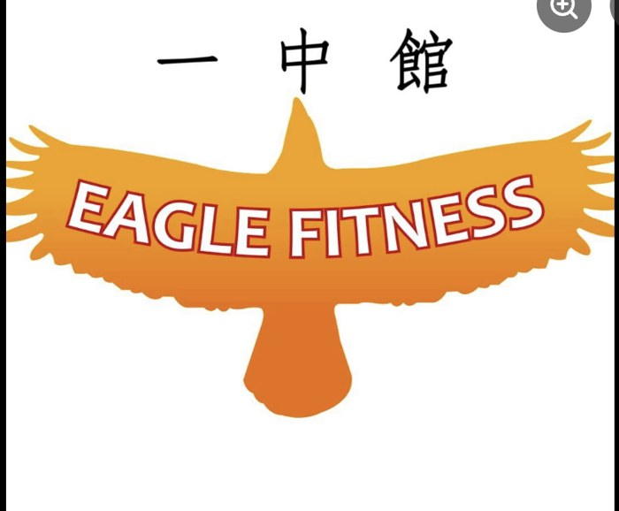

讓每一次搜尋，都有機會成為下一位學員。
SEO、GEO、AIO 搜尋布局提案｜從現有社群，走向更多被需要的時刻
瑪卡鎷網路行銷｜2026 年 11 月
Eagle Fitness 已經有一個很難得的起點
這份提案不是要取代社群，而是讓已經累積的信任，在學員主動搜尋時也能被看見。
社群讓品牌被看見，搜尋讓品牌在被需要時，有機會被找到
兩者回答的是不同的問題，所以不是二選一，而是接力。
社群：品牌主動出現在人面前
- 由平台推薦，對象通常還沒有明確需求
- 靠內容與關係，建立認識、好感與信任
- 貼文熱度集中在發布後的短時間
- 適合展現教練個性、學員氛圍、課堂畫面
Google：人帶著問題主動來找
- 由搜尋者輸入問題，需求已經存在
- 靠完整、可信的頁面回答問題
- 頁面可以長期被找到，並持續累積
- 適合承接「想開始、想比較、想預約」的人
同一位潛在學員，兩種認識 Eagle Fitness 的方式
情境示意以下為虛構的典型情境，用來說明路徑差異，不是真實學員資料。
在不同階段，學員需要的資訊不一樣
點選階段，看社群與 Google 各自擅長承接什麼。
一則貼文的熱度會過去，一個頁面可以持續回答問題
概念示意曲線僅說明內容形態的差異，不代表任何實際數據。
所以要做的不是多發一篇，而是讓好內容有地方長期放
教練的專業說明、課程的運作方式、新手常見的疑問，在社群上很快會被新貼文蓋過；在官網上則可以被反覆搜尋、閱讀與分享。
社群建立關係，Google 承接已經有需求的人
社群繼續做的事
讓人認識教練的個性與專業，感受空間氛圍，看見學員的真實改變（需經學員授權）。這是 Eagle Fitness 目前已經做得很好的部分，後續仍是品牌信任的來源。
Google 要補上的事
當有人搜尋「台中健身教練推薦」或「健身新手需要請教練嗎」時，有一個頁面完整回答，並且附上課程、教練與預約方式。這個入口目前還沒有被建立。
社群、Google、官網，串成一條完整的路
目前路徑在「官網確認」這一步沒有承接頁面，這是本次提案要補的缺口。
過去累積的社群素材，可以變成長期的搜尋資產
依 Eagle Fitness 公開資訊中已有的主題，點選看可以延伸成哪一種頁面。規劃示意為提案方向，內容仍需與品牌確認。
SEO：讓 Google 看懂你、並願意把你放進答案
SEO 是搜尋引擎最佳化，目標是讓網站在自然搜尋結果中，更容易被需要的人找到。
- 有人提出問題
例如「台中健身教練推薦」 - Google 尋找最能回答的頁面
看內容是否完整、是否可信、是否符合搜尋者想知道的事 - 搜尋者點進頁面
頁面要讓人看得懂、找得到下一步 - 留下聯絡或預約
官網提供諮詢入口，把搜尋接觸轉為對話
Google 自然搜尋，和付費廣告不一樣
| 自然搜尋（SEO） | Google 付費廣告 | |
|---|---|---|
| 如何出現 | 靠頁面內容與網站品質被 Google 評估 | 靠出價與廣告品質，按設定投放 |
| 費用方式 | 主要投入在內容與網站建置 | 通常依點擊付費 |
| 停止投入後 | 已建立的頁面仍會留在網站上，但表現仍會隨競爭與內容更新變動 | 停止投放後，廣告曝光即停止 |
| 見效節奏 | 需要時間累積，表現隨時間觀察 | 可較快開始，需持續預算 |
兩者不是對立，而是互補。本提案專注在自然搜尋的長期資產建立。
AIO：搜尋結果最上方的 AI 摘要，也需要好內容
本提案所稱 AIO，指的是 Google AI Overviews：搜尋某些問題時，Google 會在結果上方整理出一段 AI 摘要，並附上參考來源連結。
摘要需要有可靠的資料來源。條理清楚、回答完整、資訊一致的頁面，比較有機會被當成參考來源，但是否出現與引用，由 Google 決定。
2026/11/24 擷取，僅代表當次查詢結果。
GEO：當人直接問 AI，品牌有沒有被提到
越來越多人用 ChatGPT、Gemini 等生成式 AI 直接問問題。GEO 關心的是：AI 在回答時，是否提到你、引用你的內容。
資訊要完整
教練、課程、館別、適合對象，都寫清楚，AI 才有東西可以整理。
資訊要一致
官網、Google 商家、社群上的名稱、地址、電話一致，降低被誤解的機會。
要被別處提到
學員分享、媒體或合作單位的介紹，都是可信度的來源。
AI 是否提及或引用，由各平台決定，我們無法保證，但可以把內容準備好。
同一個問題，三種出現的地方
情境示意選一個搜尋問題，看同一份內容如何在三個地方被使用。畫面為示意，不是實際搜尋結果。
三者不是各自獨立的技術，而是同一份「完整、可信的內容」在不同介面的呈現。
為什麼品牌需要自己的官網
社群平台
- 版面與規則由平台決定
- 內容以時間軸排列，舊內容不易被找到
- 無法為每個搜尋問題準備專屬頁面
品牌官網
- 內容、結構與資料由品牌自己掌握
- 每個問題、每位教練、每個館別都能有專屬頁面
- 搜尋、AI 與社群都可以回到同一個地方
目前 Eagle Fitness 還沒有品牌官網，所以 Google 與 AI 可以引用的自有資料很少。這也是最大的機會。
搜尋的成效，是一點一點累積出來的
- 建立網站與核心頁面
讓 Google 與搜尋者先認識品牌 - 陸續發布專業內容
每一篇文章都是新的搜尋入口 - 觀察、調整、再優化
依實際搜尋資料，補強有機會的主題 - 內容與信任逐步累積
多月趨勢比單月數字更能說明方向
我們用什麼判讀成效
綜合多個月的曝光、點擊、頁面表現與詢問狀況，並考慮內容上線時間與季節因素。不以固定月數宣稱達標，也不承諾排名。
我們可以負責的，和不能承諾的
我們負責
- 網站所需的內容與搜尋需求規劃（與網站規劃師協作）
- 關鍵字研究與內容規劃
- 專業文章的研究與撰寫
- 追蹤搜尋資料，定期檢視與調整
我們不承諾
- 特定關鍵字的排名
- Google AI 摘要是否引用
- 生成式 AI 是否提及品牌
- 特定的詢問或學員人數
以上取決於搜尋引擎與 AI 平台的判斷，以及市場與競爭狀況。我們承諾的是把該做的事，持續做好。
Ultra Fitness：以 16 篇專業文章，建立搜尋內容體系
同樣是台中的健身空間。以下為 ultrafitness.com.tw 實際的網站架構。
服務頁面
首頁、課程介紹、關於我們，各自負責品牌與課程資訊。
專業文章（16 篇）
圍繞新手最常問的問題：健身房費用、器材、教練課、單次健身、皮拉提斯、自由教練場租。
在地與館別
台中健身房推薦、南屯健身房等在地搜尋入口，與服務頁、文章分開規劃。
網站上線時間記錄為 2025/07/04，首批文章自 2025/07/25 起陸續發布。
實際的 Google 搜尋接觸，從文章開始累積
Google Search Console 資料｜ultrafitness.com.tw｜2025/07/23–2026/11/22｜2026/11/24 查詢
首尾月份（標 *）為不完整月份。
各頁面成效（點欄位標題可排序）
頁面層級資料期間 2025/05/16–2026/09/05（2026/09/20 更新），與上方網站整體數據的期間不同。
個別案例的成果受產業、地區、競爭與內容條件影響，不代表 Eagle Fitness 未來必然達成相同結果。近期發布的文章仍在累積。
一篇文章，如何回答一個學員真正會問的問題
2026/11/24 擷取，僅代表當次查詢；不代表排名或引用會持續。
學員不只搜尋「台中健身房」，他們有一連串的問題
從「我想改變」到「我要預約」，每個階段都有不同的搜尋。點選階段看代表性問題。
以上為研究候選方向，尚未納入搜尋量數據，不是最終關鍵字清單。
七大群集，涵蓋需求、知識、課程、比較與在地
點選群集，查看 Google Ads 提供的真實月搜尋量。已排除競爭品牌名稱。
不是搜尋量越大越好，而是越接近「會來上課的人」越好
看數據
平均月搜尋量、廣告競爭程度、頁首出價（反映商業價值）。
看意圖
對方是在學習、比較，還是準備行動？是否與 Eagle Fitness 的服務相關？
看可行性
是否有內容發展空間、是否適合 AI 搜尋的內容布局、是否可能帶來實際到館。
與業務無關的流量字，即使搜尋量高也不納入。
建議優先從這些方向開始
依 Eagle Fitness 的特色與目前沒有官網的狀況，初步判斷。實際順序取得搜尋數據後調整。
| 方向 | 為什麼先做 | 承接頁面 |
|---|---|---|
| 特色訓練 TRX、懸吊、核心 | 是品牌最明確的差異，也是同業較難複製的專業 | 課程頁＋專業文章 |
| 教練與課程 費用、怎麼選、值不值得 | 搜尋者已接近行動，最容易轉成預約 | 教練介紹頁＋文章 |
| 體態管理 減脂、雕塑、改善體態 | 需求量大，且與品牌專業內容一致 | 專業文章 |
| 健身新手 第一次健身、需不需要教練 | 新手最需要被解答，也最容易建立信任 | FAQ＋文章 |
| 在地搜尋 台中、商圈、各館別 | 直接影響到館，需與 Google 商家資訊一致 | 館別頁 |
每個館別，都應該有自己的搜尋入口
在地搜尋的人，通常會直接問「離我近的」。每個實際營運的館別，建議各有一頁。
一中館
一中商圈
地址與營業時間，依館別頁建立時確認
勤美館
台中市西區中美街 283 號 2 樓
勤美商圈
館別頁的版面與結構，由網站規劃師依品牌需求決定；我們提供各館的搜尋需求與內容建議，並請與 Google 商家資料保持一致。
從一次搜尋，到預約體驗
每個入口都設置可追蹤的來源，之後能看到哪些內容帶來實際的諮詢。
不同的合作期間，對應不同的經營目標
一年｜建立基礎
建立官網及核心搜尋入口。優先驗證主要客群與搜尋需求，定期觀察與調整。
兩年｜擴展市場
在搜尋基礎上，進一步擴展客群、課程主題與專業內容深度。
三年｜品牌深耕
建立更完整的專業內容體系，持續累積品牌搜尋資產。
搜尋成效需要時間累積。各期間皆以多月趨勢判讀，不設定固定月數的達標承諾。
合作期間，我們會做這些事
建立
- 與網站規劃師協作，承接搜尋與內容需求
- 關鍵字研究與內容規劃
- 搜尋資料追蹤設定
持續
- 依約定篇數發布專業 SEO 文章
- 定期檢視搜尋資料
- 依觀察結果調整與優化
需要品牌配合的部分：教練與課程的專業資訊、照片素材、學員故事授權。完整服務範圍與稅別，以正式報價及合約為準。
三種合作期間，各自的內容布局
選擇一個合作期間，下方會顯示對應的付款、服務期間與文章規劃。選擇僅作比較，不代表簽約。
每期付款依實際付款期數計算，一年最多 12 期，兩年與三年最多 24 期，零利率。平均每月投入是合約總價除以服務月數的比較金額，不是付款方式。文章於網站正式上線後每月一篇，依所選方案的總篇數執行；配置為初步規劃，將依關鍵字數據與商業需求調整，服務頁面與館別頁面不計入文章篇數。
下一步
- 確認合作期間與服務範圍
- 確認館別、教練與課程資訊
提供官網所需的專業素材與授權 - 取得關鍵字數據，定案第一階段主題
- 開始官網與內容製作
瑪卡鎷網路行銷｜徐昀
0903-966-225